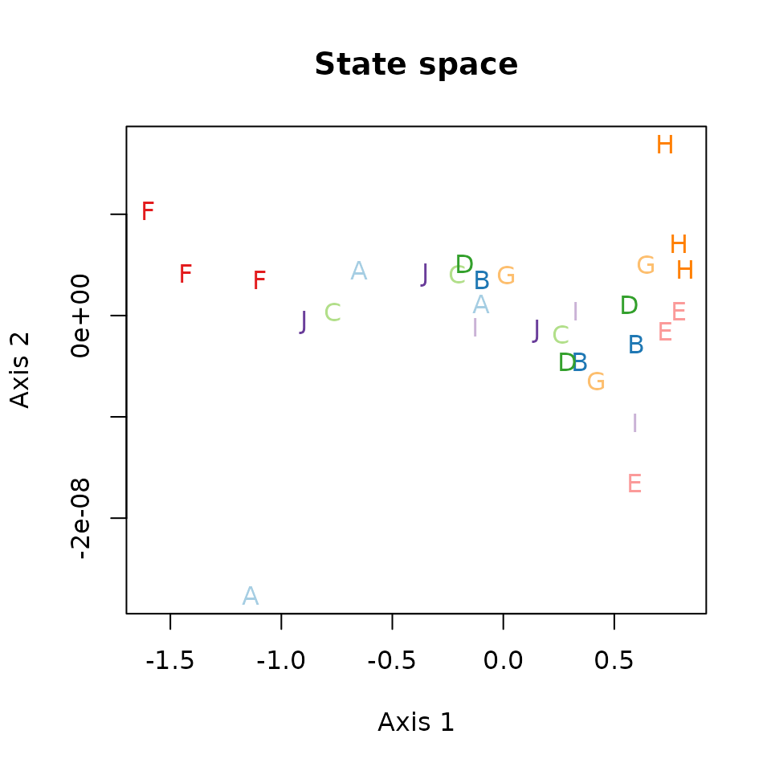
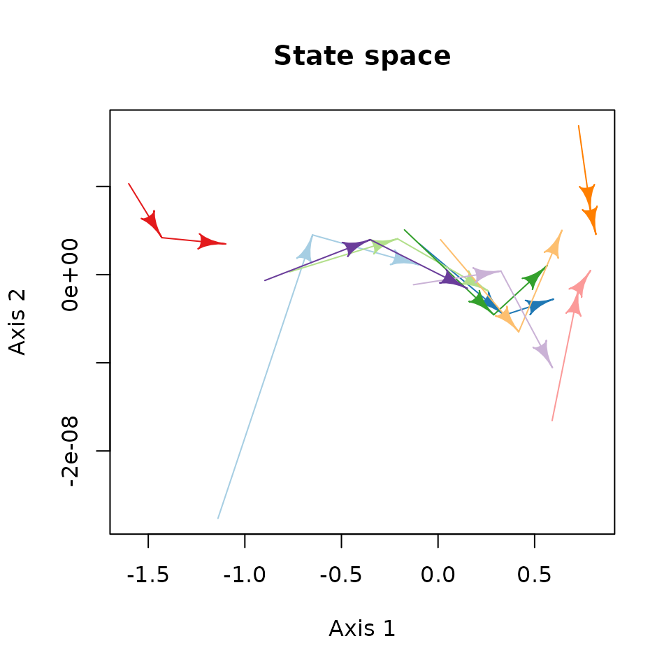
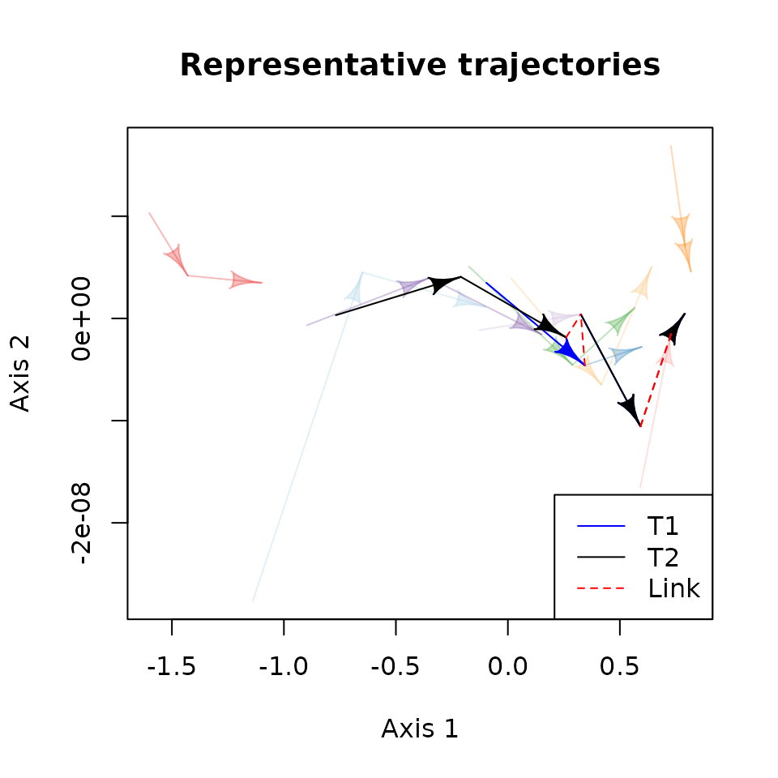
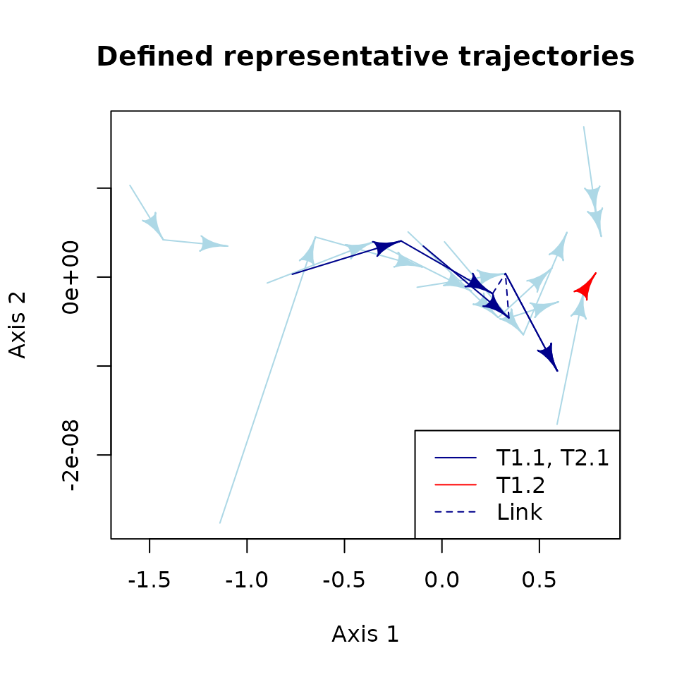

Ecological Dynamic Regime framework
Martina Sánchez-Pinillos
Source:vignettes/EDR_framework.Rmd
EDR_framework.Rmd1. Introduction
1.1. Ecological Dynamic Regimes and the EDR framework
An Ecological Dynamic Regime (EDR) is defined as the “fluctuations of ecosystem states around some trend or average resulting from an intricate mix of internal processes and external forces that, in the absence of perturbations, keep the system within specific domains of attraction” (Sánchez-Pinillos et al., 2023).
EDRs are composed of multiple ecological trajectories showing similar processes in the development, interaction, and reorganization of some state variables over time. Thus, ecological trajectories are the essential units of EDRs and can be defined as sequences of observations capturing the temporal changes of some state variables. Usually, ecological trajectories are defined based on multiple state variables (e.g., species, functional traits, land uses) that make challenging the characterization and comparison of EDRs.
The EDR framework is a set of algorithms and metrics aiming to characterize and compare EDRs composed of ecological trajectories in multidimensional state spaces. You can find more information in the following publication, including the formal definition of the EDR concept, the methodological details of the framework, and some illustrative examples with artificial and real data sets:
- Sánchez-Pinillos M., Kéfi, S., De Cáceres, M., Dakos, V. 2023. Ecological Dynamic Regimes: Identification, characterization, and comparison. Ecological Monographs. https://doi.org/10.1002/ecm.1589
1.2. About this vignette
This vignette aims to give you an overview of the EDR framework and
its implementation in ecoregime to characterize and compare
EDRs.
You can install ecoregime directly from CRAN or from my
GitHub account (development version):
# install.packages("ecoregime")
# devtools::install_github(repo = "MSPinillos/ecoregime", dependencies = T, build_vignettes = T)Once you have installed ecoregime you will have to load
it:
citation("ecoregime")
#> To cite 'ecoregime' in publications use:
#>
#> Sánchez-Pinillos M, Kéfi S, De Cáceres M, Dakos V (2023). "Ecological
#> dynamic regimes: Identification, characterization, and comparison."
#> _Ecological Monographs_. <https://doi.org/10.1002/ecm.1589>.
#>
#> Sánchez-Pinillos M (2023). _ecoregime: Analysis of Ecological Dynamic
#> Regimes_. <https://doi.org/10.5281/zenodo.7584943>.
#>
#> To see these entries in BibTeX format, use 'print(<citation>,
#> bibtex=TRUE)', 'toBibtex(.)', or set
#> 'options(citation.bibtex.max=999)'.2. Trajectory data, state and trajectory spaces
If you are familiar with ecological trajectories defined in multivariate spaces, you can probably skip this section. Otherwise, I recommend you to read on.
Let me define a simple example that I will use along this vignette. Imagine that we have 10 sampling units in which we are monitoring the temporal changes in some state variables. For example, those sampling units (A, B, …, J) could be permanent plots or transects in which we have inventoried the abundance of two species (sp1, sp2) at three temporal points (t = 1, t = 2, t = 3).
I will use the Lotka-Volterra model to generate some artificial data and illustrate our example. I will define the parameters of the model to generate trajectories leading to the competitive exclusion of sp2 by sp1 regardless of the initial state. As such, all sampling units will have analogous trajectories that can be considered part of the same EDR.
# ID of the sampling units and observations
ID_sampling <- LETTERS[1:10]
ID_obs <- 1:3
# Define initial species abundances
set.seed(123)
initial <- data.frame(sampling_units = ID_sampling,
sp1 = round(runif(10), 2),
sp2 = round(runif(10), 2))
# Define the parameters for the Lotka-Volterra model
parms <- c(r1 = 1, r2 = 0.1, a11 = 0.02, a21 = 0.03, a22 = 0.02, a12 = 0.01)
# We can use primer and deSolve to run the simulations
library(primer)
#> Loading required package: deSolve
#> Loading required package: ggplot2
simulated_abun <- lapply(1:nrow(initial), function(isampling){
# Initial abundance in the sampling unit i
initialN <- c(initial$sp1[isampling], initial$sp2[isampling])
# Simulate community dynamics
simulated_abun <- data.frame(ode(y = initialN, times = ID_obs, func = lvcomp2, parms = parms))
# Add the names of the sampling units
simulated_abun$sampling_unit <- ID_sampling[isampling]
# Calculate relative abundances
simulated_abun$sp1 <- simulated_abun$X1/rowSums(simulated_abun[, 2:3])
simulated_abun$sp2 <- simulated_abun$X2/rowSums(simulated_abun[, 2:3])
return(simulated_abun[, c("sampling_unit", "time", "sp1", "sp2")])
})
# Compile species abundances of all sampling units in the same data frame
abundance <- do.call(rbind, simulated_abun)We obtain an abundance matrix similar to what we could get from field
data. For each sampling unit (sampling_unit) and
observation (time), we know the relative abundance of two
species (sp1 and sp2).
head(abundance)
#> sampling_unit time sp1 sp2
#> 1 A 1 0.2320000 0.76800000
#> 2 A 2 0.4222631 0.57773693
#> 3 A 3 0.6354107 0.36458929
#> 4 B 1 0.6370968 0.36290323
#> 5 B 2 0.8078814 0.19211857
#> 6 B 3 0.9066680 0.09333198Next, we need to define the state space in which ecological trajectories live. The state space is a multidimensional resemblance space defined by the dissimilarities between every pair of states (the observations) in terms of some state variables (the species). That is, we need to generate a matrix (\(D_O\)) representing the state space and containing the dissimilarities between the observations of all sampling units.
The choice of the dissimilarity metric used to generate \(D_O\) depends on the characteristics of your data and the nature of the variables. Your decision should be made carefully since it will affect the analyses in the EDR framework. In our example, we are using species abundances. A common dissimilarity metric adequate for that is the percentage difference (a.k.a. Bray-Curtis index). However, if you have presence/absence data, you could prefer the Jaccard’s distance, and if your state variables are categorical (e.g., functional traits), you should use a multi-trait dissimilarity (e.g., the Gower distance).
In our example, we will use vegan to calculate
Bray-Curtis dissimilarities and generate \(D_O\).
# Generate a matrix containing dissimilarities between states
state_dissim <- vegan::vegdist(abundance[, c("sp1", "sp2")], method = "bray")
as.matrix(state_dissim)[1:6, 1:6]
#> 1 2 3 4 5 6
#> 1 0.0000000 0.1902631 0.403410706 0.405096774 0.57588143 0.67466802
#> 2 0.1902631 0.0000000 0.213147639 0.214833707 0.38561836 0.48440495
#> 3 0.4034107 0.2131476 0.000000000 0.001686068 0.17247072 0.27125731
#> 4 0.4050968 0.2148337 0.001686068 0.000000000 0.17078465 0.26957124
#> 5 0.5758814 0.3856184 0.172470722 0.170784654 0.00000000 0.09878659
#> 6 0.6746680 0.4844050 0.271257312 0.269571243 0.09878659 0.00000000We can visualize the state space using ordination methods. Here, I
apply multidimensional scaling (mMDS; smacof) to the
dissimilarity matrix \(D_O\) and plot the distribution of
the ecological states in an ordination space. We will use different
colors and the code of the sampling unit to represent the observations
of each sampling unit:
# Multidimensional scaling
state_mds <- smacof::smacofSym(state_dissim, ndim = 2)
state_mds <- data.frame(state_mds$conf)
# Define different colors for each trajectory
traj.colors <- RColorBrewer::brewer.pal(10, "Paired")
# Plot the distribution of the states in the state space
plot(state_mds$D1, state_mds$D2,
col = rep(traj.colors, each = 3), # use different colors for each sampling unit
pch = rep(ID_sampling, each = 3), # use different symbols for each sampling unit
xlab = "Axis 1", ylab = "Axis 2",
main = "State space")
To see how ecological trajectories are distributed in the state space, we just need to link the states of each sampling unit in chronological order.
## -->> This code shows you the process step by step. You could directly use
## -->> ecotraj::trajectoryPlot()
# Plot the distribution of the states in the state space
plot(state_mds$D1, state_mds$D2,
col = rep(traj.colors, each = 3), # use different colors for each sampling unit
pch = rep(ID_sampling, each = 3), # use different symbols for each sampling unit
xlab = "Axis 1", ylab = "Axis 2",
main = "State space")
# Link trajectory states in chronological order
for (isampling in seq(1, 30, 3)) {
# From observation 1 to observation 2
shape::Arrows(state_mds[isampling, 1], state_mds[isampling, 2],
state_mds[isampling + 1, 1], state_mds[isampling + 1, 2],
col = traj.colors[1+(isampling-1)/3], arr.adj = 1)
# From observation 2 to observation 3
shape::Arrows(state_mds[isampling + 1, 1], state_mds[isampling + 1, 2],
state_mds[isampling + 2, 1], state_mds[isampling + 2, 2],
col = traj.colors[1+(isampling-1)/3], arr.adj = 1)
}
The trajectory space is a multidimensional space defined by the dissimilarities between trajectories (i.e., the whole sequence of states for each sampling unit). Analogously to the state space, you need to generate a dissimilarity matrix (\(D_T\)) and the metric that you use will affect the subsequent analyses. Although there are multiple metrics, there are no formal analyses evaluating their performance in ecological applications. Here, I suggest the directed segment path dissimilarity (De Cáceres et al., 2019, Ecol. Monogr., https://doi.org/10.1002/ecm.1350), but you could use any other dissimilarity metric.
# Generate a matrix containing dissimilarities between trajectories
traj_dissim <- ecotraj::trajectoryDistances(state_dissim,
sites = rep(ID_sampling, each = 3),
surveys = rep(ID_obs, 10), distance.type = "DSPD")
as.matrix(traj_dissim)[1:6, 1:6]
#> A B C D E F
#> A 0.0000000 0.30509564 0.1084426 0.27711311 0.5425424 0.2600516
#> B 0.3050956 0.00000000 0.1409823 0.02576483 0.1520544 0.6244592
#> C 0.1084426 0.14098231 0.0000000 0.11299979 0.3784291 0.4231264
#> D 0.2771131 0.02576483 0.1129998 0.00000000 0.1756016 0.6031298
#> E 0.5425424 0.15205442 0.3784291 0.17560156 0.0000000 0.8146293
#> F 0.2600516 0.62445921 0.4231264 0.60312977 0.8146293 0.0000000In contrast to the state space, in the trajectory space, each trajectory is represented by one point:
# Multidimensional scaling
traj_mds <- smacof::smacofSym(traj_dissim, ndim = 2)
traj_mds <- data.frame(traj_mds$conf)
# Plot the distribution of the trajectories in the trajectory space
plot(traj_mds$D1, traj_mds$D2,
col = traj.colors, # use different colors for each sampling unit
pch = ID_sampling, # use different symbols for each sampling unit
xlab = "Axis 1", ylab = "Axis 2",
main = "Trajectory space")3. Defining EDRs
3.1. Identifying EDRs from clustering analyses
Identifying EDRs involves finding groups of ecological trajectories showing dynamic patterns more similar between each other than with any other ecological trajectory in the trajectory space. In this sense, it is possible to use the trajectory dissimilarity matrix (\(D_T\)) to identify EDRs through clustering. However, applying clustering analyses to trajectory data is not always straightforward. Depending on the characteristics of your data, your goals, and the system that you are evaluating, the choice of the clustering algorithm may have important consequences.
Currently, this is out of the scope of ecoregime but you
can find more details in the paper introducing the EDR framework
(Sánchez-Pinillos et al., 2023)
3.2. Defining EDRs based on ecological properties
Clustering analyses are not the only way to define EDRs. As I stated before, the ecological trajectories of our simulated data can be considered part of the same EDR for having similar dynamic patterns. Thus, you could define groups of trajectories that you want to evaluate for sharing similar aspects in the state variables. For example, you could consider groups of trajectories with the same number of observations in which the state variables change following similar patterns.
4. Representative trajectories
Regardless of the method used to define EDRs, you can use
ecoregime to summarize their dynamics. In our example, it
is easy to identify a clear pattern of competitive exclusion of
sp2 by sp1. We can simply plot the changes in species
abundances over time to see this pattern:
# Plot species abundances over time
plot(abundance$time, abundance$sp1, type = "n", ylim = c(-0.01, 1),
xlab = "Observation", ylab = "Species abundance",
main = "Temporal variation in species composition")
for (i in seq_along(ID_sampling)) {
points(abundance[which(abundance$sampling_unit == ID_sampling[i]), ]$time,
abundance[which(abundance$sampling_unit == ID_sampling[i]), ]$sp1,
col = traj.colors[i], pch = ID_sampling[i])
lines(abundance[which(abundance$sampling_unit == ID_sampling[i]), ]$time,
abundance[which(abundance$sampling_unit == ID_sampling[i]), ]$sp1,
col = "black", pch = ID_sampling[i])
points(abundance[which(abundance$sampling_unit == ID_sampling[i]), ]$time,
abundance[which(abundance$sampling_unit == ID_sampling[i]), ]$sp2,
col = traj.colors[i], pch = ID_sampling[i])
lines(abundance[which(abundance$sampling_unit == ID_sampling[i]), ]$time,
abundance[which(abundance$sampling_unit == ID_sampling[i]), ]$sp2,
col = "red", pch = ID_sampling[i], lty = 2)
}
legend("bottomleft", legend = c("sp1", "sp2"), col = 1:2, lty = 1:2, bg = "white")Or we can test the correlations between the first axis of the state space and the species abundances along the trajectories.
# Correlation of the first axis of the state space with the abundance of sp1
cor(state_mds$D1, abundance$sp1)
#> [1] 1
# Correlation of the first axis of the state space with the abundance of sp2
cor(state_mds$D1, abundance$sp2)
#> [1] -1These analyses are fine for extremely simple systems as the one simulated in our toy data. However, when we want to apply these or similar approaches to empirical data, finding clear dynamical patterns becomes more difficult. In real ecosystems, we usually have to deal with a great heterogeneity, multiple variables interacting between each other, and noise. As a consequence, we need robust tools able to summarize a great variety of trajectories in multidimensional spaces. That is precisely what RETRA-EDR pursues.
4.1. Identifying representative trajectories with RETRA-EDR
RETRA-EDR (REpresentative TRAjectories in Ecological Dynamic Regimes) is an algorithm that aims to identify representative trajectories in EDRs based on the distribution and density of their ecological trajectories (Sánchez-Pinillos et al., 2023). Whereas many algorithms with similar goals where developed for moving objects in low-dimensional spaces, RETRA-EDR can be applied to high-dimensional spaces, capturing the complexity of empirical data.
I will not explain the details of RETRA-EDR in this vignette (you can
find them in Sánchez-Pinillos et al., 2023), but it is important that
you know its main steps to understand the output returned by
retra_edr():
- The ecological trajectories forming the EDR are split into segments. Then, a segment space analogous to the trajectory space is generated from a matrix containing segment dissimilarities.
- The segment space is divided into regions with a minimum number of
trajectory segments (
minSegs). For that, RETRA-EDR recursively divides the space into halves following the axes of the segment space and generating a kd-tree structure. The greater the density of segments in a particular region, the larger the number of partitions required until obtaining regions withminSegssegments. The number of partitions is known as the depth of the kd-tree (kdTree_depth) and the number of segments in the final region is theDensity. - For each region with at least
minSegssegments, RETRA-EDR extracts the medoid as the representative segment. - All representative segments are joined forming a network of representative trajectories.
- RETRA-EDR returns a set of attributes characterizing the
representative trajectories identified in the EDR, including
the value of
minSegs; the sequence of representative segments (Segments) and the number of states (Size) forming each representative trajectory; the total length of the trajectory (Length); the links (Link) generated to join representative segments and the dissimilarity between the connected states (Distance); the number of segments in each region represented by each representative segment (Density), and the number of partitions of the segment space until obtaining a region withminSegssegments or less (kdTree_depth).
Let’s apply retra_edr() to our data. As the EDR only
contains 10 trajectories, we will assign a value of minSegs
relatively low.
# Use set.seed to obtain reproducible results of the segment space in RETRA-EDR
set.seed(123)
# Apply RETRA-EDR
repr_traj <- retra_edr(d = state_dissim, trajectories = rep(ID_sampling, each = 3),
states = rep(ID_obs, 10), minSegs = 2)RETRA-EDR has returned two representative trajectories. We can
summarize their attributes using summary():
summary(repr_traj)
#> ID Size Length Avg_link Sum_link Avg_density Max_density Avg_depth
#> T1 T1 6 0.3577606 0.02996245 0.05992491 3 3 3.666667
#> T2 T2 7 0.6048257 0.03925918 0.07851836 3 3 3.500000
#> Max_depth
#> T1 4
#> T2 4The output of retra_edr() is an object of class
RETRA. We can extract specific attributes as we do with
lists.
Segments is probably the most important attribute since
it informs about the states that form the representative
trajectories.
- T1 is composed of six states of three different trajectories (B, I, and E).
- T2 is composed of the three states of the sampling unit C and converges towards T1 through a link between the last state of C and the second state of I.
lapply(repr_traj, "[[", "Segments")
#> $T1
#> [1] "B[1-2]" "I[2-3]" "E[2-3]"
#>
#> $T2
#> [1] "C[1-2]" "C[2-3]" "I[2-3]" "E[2-3]"4.2. Visualizing representative trajectories in the state space
We can also visualize the representative trajectories in the state
space using the function plot().
# Plot the representative trajectories of an EDR
plot(repr_traj, # <-- This is a RETRA object returned by retra_edr()
# data to generate the state space
d = state_mds, trajectories = rep(ID_sampling, each = 3), states = rep(ID_obs, 10),
# use the colors previously used for individual trajectories.
# (make them more transparent to highlight representative trajectories)
traj.colors = alpha(traj.colors, 0.3),
# display representative trajectories in blue
RT.colors = "blue",
# select T2 to be displayed with a different color (black)
select_RT = "T2", sel.color = "black",
# Identify artificial links using dashed lines (default) and a different color (red)
link.lty = 2, link.color = "red",
# We can use other arguments in plot()
main = "Representative trajectories")
# Add a legend
legend("bottomright", c("T1", "T2", "Link"),
col = c("blue", "black", "red"), lty = c(1, 1, 2))
4.3. Defining representative trajectories based on trajectory features
RETRA-EDR returns the longest possible trajectory according to the procedure defined before. However, you could be interested in only a fraction of a representative trajectory, split representative trajectories based on some criteria (e.g. long artificial links), or maybe, define your own representative trajectory.
Let’s say that we want to split T1 and T2 from the
last segment ("E[2-3]"). For that, we can use the function
define_retra().
There are two ways of defining our “new” trajectories. The first one consists in providing all the details in a data frame:
# Generate a data frame indicating the states forming the new trajectories
new_traj_df <- data.frame(
# name of the new trajectories (as many times as the number of states)
RT = c(rep("T1.1", 4), rep("T2.1", 5), rep("T1.2", 2)),
# name of the trajectories (sampling units)
RT_traj = c(rep("B", 2), rep("I", 2), # for the first trajectory (T1.1)
rep("C", 3), rep("I", 2), # for the second trajectory (T2.1)
rep("E", 2)), # for the third trajectory (T1.2)
# states in each sampling unit
RT_states = c(1:2, 2:3, # for the first trajectory (T1.1)
1:3, 2:3, # for the second trajectory (T2.1)
2:3), # for the third trajectory (T1.2)
# representative trajectories obtained in retra_edr()
RT_retra = c(rep("T1", 4), rep("T2", 5),
rep("T1", 2)) # The last segment belong to both (T1, T2), choose one
)
new_traj_df
#> RT RT_traj RT_states RT_retra
#> 1 T1.1 B 1 T1
#> 2 T1.1 B 2 T1
#> 3 T1.1 I 2 T1
#> 4 T1.1 I 3 T1
#> 5 T2.1 C 1 T2
#> 6 T2.1 C 2 T2
#> 7 T2.1 C 3 T2
#> 8 T2.1 I 2 T2
#> 9 T2.1 I 3 T2
#> 10 T1.2 E 2 T1
#> 11 T1.2 E 3 T1The second one consists in providing a list with the sequences of segments defining each trajectory. This is particularly useful when we want to select a subset in the output of RETRA-EDR:
# List including the sequence of segments for each new trajectory
new_traj_ls <- list(
# First part of T1 excluding the last segment
repr_traj$T1$Segments[1:(length(repr_traj$T1$Segments) - 1)],
# First part of T2 excluding the last segment
repr_traj$T2$Segments[1:(length(repr_traj$T2$Segments) - 1)],
# Last segment of T1 and T2: segment composed of states 2 and 3 of the sampling unit E ("E[2-3]")
"E[2-3]"
)
new_traj_ls
#> [[1]]
#> [1] "B[1-2]" "I[2-3]"
#>
#> [[2]]
#> [1] "C[1-2]" "C[2-3]" "I[2-3]"
#>
#> [[3]]
#> [1] "E[2-3]"In any case, define_retra() will return the same
output
# Define representative trajectories using a data frame
new_repr_traj <- define_retra(data = new_traj_df,
# Information of the state space
d = state_dissim, trajectories = rep(ID_sampling, each = 3),
states = rep(ID_obs, 10),
# RETRA object returned by retra_edr()
retra = repr_traj)
# Define representative trajectories using a list with sequences of segments
new_repr_traj_ls <- define_retra(data = new_traj_ls,
# Information of the state space
d = state_dissim, trajectories = rep(ID_sampling, each = 3),
states = rep(ID_obs, 10),
# RETRA object returned by retra_edr()
retra = repr_traj)
if (all.equal(new_repr_traj, new_repr_traj_ls)) {
print("Yes, both are equal!")
}
#> [1] "Yes, both are equal!"define_retra() returns an object of class
RETRA that you can use to plot the new trajectories:
plot(new_repr_traj, # <-- This is the RETRA object returned by define_retra()
# data to generate the state space
d = state_mds, trajectories = rep(ID_sampling, each = 3), states = rep(ID_obs, 10),
# display individual trajectories in light blue
traj.colors = "lightblue",
# display representative trajectories in dark blue
RT.colors = "darkblue",
# select T1.2 to be displayed in a different color (red)
select_RT = "T1.2", sel.color = "red",
# Identify artificial links using dashed lines (default), but use the same
# color than the representative trajectories (default)
link.lty = 2, link.color = NULL,
# We can use other arguments in plot()
main = "Defined representative trajectories")
# Add a legend
legend("bottomright", c("T1.1, T2.1", "T1.2", "Link"),
col = c("darkblue", "red", "darkblue"), lty = c(1, 1, 2))
4.4. Variation of ecological properties along representative trajectories
The definition of representative trajectories is based on the real states of the sampling units. Thus, it is possible to assess the variation of some ecological properties along the representative trajectories, and therefore, across the EDR.
Let’s see how species diversity varies along the representative
trajectories returned by retra_edr(). First, we need to
calculate an index of species diversity (e.g., Shannon index) for the
states in each representative trajectory and set the order of the states
in the trajectory:
# Set an ID in the abundance matrix
abundance$ID <- paste0(abundance$sampling_unit, abundance$time)
# Calculate the Shannon index in all trajectory states
abundance$Shannon <- vegan::diversity(abundance[, c("sp1", "sp2")], index = "shannon")
# Identify the states forming both representative trajectories
traj_states <- lapply(repr_traj, function(iRT){
segments <- iRT$Segments
seg_components <- strsplit(gsub("\\]", "", gsub("\\[", "-", segments)), "-")
traj_states <- vapply(seg_components, function(iseg){
c(paste0(iseg[1], iseg[2]), paste0(iseg[1], iseg[3]))
}, character(2))
traj_states <- unique(as.character(traj_states))
traj_states <- data.frame(ID = traj_states, RT_states = 1:length(traj_states))
})
# Associate the states of the representative trajectories with their corresponding
# value of the Shannnon index
RT_diversity <- lapply(traj_states, function(iRT){
data <- merge(iRT, abundance, by = "ID", all.x = T)
data <- data[order(data$RT_states), ]
})
RT_diversity$T2
#> ID RT_states sampling_unit time sp1 sp2 Shannon
#> 1 C1 1 C 1 0.3761468 0.62385321 0.66214624
#> 2 C2 2 C 2 0.5930319 0.40696810 0.67573602
#> 3 C3 3 C 3 0.7754031 0.22459689 0.53266482
#> 6 I2 4 I 2 0.8009390 0.19906100 0.49909794
#> 7 I3 5 I 3 0.9044378 0.09556219 0.31522122
#> 4 E2 6 E 2 0.9574203 0.04257971 0.17605768
#> 5 E3 7 E 3 0.9809725 0.01902749 0.09422978Then, we can evaluate the variation of species diversity along the representative trajectories graphically:
# Plot the variation of species diversity in T1
plot(x = RT_diversity$T1$RT_states + 1, y = RT_diversity$T1$Shannon,
type = "l", col = "blue", xlim = c(1, 7), ylim = c(0, 0.7),
xlab = "RT state", ylab = "Shannon index",
main = "Variation of species diversity")
# Add the variation of species diversity in T2
lines(x = RT_diversity$T2$RT_states, y = RT_diversity$T2$Shannon,
col = "black")
# Add a legend
legend("topright", c("T1", "T2"), col = c("blue", "black"), lty = 1)5. Distribution and heterogeneity of ecological trajectories in EDRs
Representative trajectories aim to summarize the main dynamic patterns of ecological systems in a given EDR. As a complement, you can compute additional metrics to understand the internal structure of the EDR.
5.1. Dynamic dispersion (dDis)
Dynamic dispersion (dDis) is calculated as the average dissimilarity between the trajectories in an EDR and another trajectory taken as a reference (Sánchez-Pinillos et al., 2023).
If the trajectory taken as the reference is one of the representative trajectories (e.g. T2), dDis can be used as an indicator of its fitness to the data and as an overall metric of the dispersion of the trajectories in the EDR.
First, you need to prepare the data. Even if the states of the representative trajectories are already in your abundance and dissimilarity matrices, you will need to duplicate them to indicate that this is a different trajectory. We can directly use the data frame that we produced to calculate species diversity.
# Change the trajectory identifier and the number of the state
abundance_T2 <- RT_diversity$T2
abundance_T2$sampling_unit <- "T2"
abundance_T2$time <- abundance_T2$RT_states
# Add representative trajectories' data to the abundance matrix
abundance_T2 <- rbind(abundance, abundance_T2[, names(abundance)])
# Calculate state dissimilarities including the representative trajectory
state_dissim_T2 <- vegan::vegdist(abundance_T2[, c("sp1", "sp2")], method = "bray")Now, we can compute dDis using dDis():
# Compute dDis taking T2 as reference
dDis_T2 <- dDis(d = state_dissim_T2, d.type = "dStates",
trajectories = abundance_T2$sampling_unit, states = abundance_T2$time,
reference = "T2")
dDis_T2
#> dDis (ref. T2)
#> 0.1463935Instead of using the representative trajectory as the reference, we could use any other trajectory of the EDR to quantify how “immersed” it is in the EDR. Let’s compare dDis for trajectories of the sampling units I, which is part of both representative trajectories, and F, which was displayed relatively far from the rest of trajectories in the state and trajectory spaces.
In this case, we will use the trajectory dissimilarity matrix generated for the original data:
# dDis: reference C
dDis_I <- dDis(d = traj_dissim, d.type = "dTraj",
trajectories = ID_sampling,
reference = "I")
# dDis: reference F
dDis_F <- dDis(d = traj_dissim, d.type = "dTraj",
trajectories = ID_sampling,
reference = "F")
dDis_I
#> dDis (ref. I)
#> 0.1847822
dDis_F
#> dDis (ref. F)
#> 0.5809146As expected, the dispersion when trajectory F is taken as the reference is larger than for trajectory I, indicating that F is more isolated than I within the EDR.
Alternatively, you can weight each trajectory depending on some
criteria. Currently, dDis() is able to compute
dDis weighting ecological trajectories by their size
(w.type = "size") and length
(w.type = "length"). However, if you want to use different
criteria, you can use a set of weights of your choice
(w.type = "precomputed") and indicate them through the
w.values argument. For example, imagine that you want to
weight each trajectory by the initial abundance of sp2:
# Define w values
initial_sp2 <- abundance[which(abundance$time == 1), ]$sp2
# Identify the index of the reference trajectories
ind_I <- which(ID_sampling == "I")
ind_F <- which(ID_sampling == "F")
# Compute dDis with weighted trajectories:
# Considering I as reference
dDis_I_w <- dDis(d = traj_dissim, d.type = "dTraj",
trajectories = ID_sampling, reference = "I",
w.type = "precomputed", w.values = initial_sp2[-ind_I])
# Considering F as reference
dDis_F_w <- dDis(d = traj_dissim, d.type = "dTraj",
trajectories = ID_sampling, reference = "F",
w.type = "precomputed", w.values = initial_sp2[-ind_F])
dDis_I_w
#> dDis (ref. I)
#> 0.2517555
dDis_F_w
#> dDis (ref. F)
#> 0.4742493In comparison with the previous results, dDis has increased and decreased for I and F, respectively, as a result of the greater abundance of sp2 in F than in I. This result could be interpreted as a lower isolation of F in relation to the trajectories initially dominated by sp2.
Weighting ecological trajectories is equivalent to modifying the location of the trajectory taken as the reference. Therefore, I do not recommend you to weight trajectories if the representative trajectory is the reference of dDis because it could make difficult the interpretation of the results.
5.2. Dynamic beta diversity (dBD)
Dynamic beta diversity (dBD) was proposed by De Cáceres et al. (2019; Ecol. Monogr., https://doi.org/10.1002/ecm.1350) to quantify the overall variability of a group of trajectories. Conceptually, it measures the average distance to the centroid of the trajectories. Therefore, it is quite similar to dDis when it is calculated taking a representative trajectory as the reference.
dBD is implemented in the function dBD(). As
you can imagine, dBD in our EDR is very small because the
dynamical patterns of all trajectories are very similar.
5.3. Dynamic evenness (dEve)
Dynamic evenness (dEve) quantifies the regularity with which an EDR is filled by ecological trajectories (Sánchez-Pinillos et al., 2023). This metric informs about the existence of groups of trajectories within the EDR.
You can compute dEve with the function
dEve():
# Calculate dEve
dEve(d = traj_dissim, d.type = "dTraj", trajectories = ID_sampling)
#> dEve
#> 0.5827095Like dDis, dEve can also be calculated using different weights for the individual trajectories of the EDR. In that case, dEve is equivalent to the functional evenness index proposed by Villéger et al. (2003; Ecology, https://doi.org/10.1890/07-1206.1).
For example, weighting ecological trajectories by the initial abundance of sp2 is equivalent to reducing the dissimilarity of the trajectories dominated by sp2 and dEve increases.
# Calculate dEve weighting trajectories by the initial abundance of sp2
dEve(d = traj_dissim, d.type = "dTraj", trajectories = ID_sampling,
w.type = "precomputed", w.values = initial_sp2)
#> dEve
#> 0.62960346. Comparing EDRs
Representative trajectories and the metrics of dynamic dispersion, beta diversity, and evenness will allow you to characterize EDRs based on their dynamic patterns and the distribution of ecological trajectories. Therefore, you can compare two or more EDRs based on these features, saying “this EDR is dominated by these dynamics, whereas the dynamics in this other EDR are different” or “the trajectories in this EDR are more diverse than in this other EDR”. But what if you want to quantify how different two EDRs are? This is a common situation. Perhaps, you want to compare EDRs of ecosystems under different environmental conditions, for example, forest communities dominated by the same species that grow under different climatic conditions. Perhaps, you want to use simulated data to assess the effects of the introduction of certain species in the EDRs.
Of course, comparing EDR characteristics will provide you with very
valuable information, but if you want “a number”, you will have to
calculate the dissimilarities between EDRs. You can do
it using ecoregime.
Let’s generate two more EDRs to be compared with the previous one.
We will use the initial states of our first EDR to define the abundances of sp1 and sp2, but we will introduce a third species (sp3).
# ID of the sampling units for EDR2
ID_sampling2 <- paste0("inv_", LETTERS[1:10])
# Define initial species abundances for sp3
set.seed(321)
initial$sp3 <- round(runif(10, 0, 0.5), 2)
# Define the parameters for the Lotka-Volterra model
parms2 <- c(r1 = 1, r2 = 0.1, a11 = 0.02, a21 = 0.03, a22 = 0.02, a12 = 0.01,
r3 = 1.5, a33 = 0.02, a31 = 0.01, a32 = 0.01, a13 = 0.1, a23 = 0.1)
# We can use primer to run the simulations
simulated_abun2 <- lapply(1:nrow(initial), function(isampling){
# Initial abundance in the sampling unit i
initialN <- c(initial$sp1[isampling], initial$sp2[isampling], initial$sp3[isampling])
# Simulate community dynamics
simulated_abun <- data.frame(ode(y = initialN, times = ID_obs, func = lvcomp3, parms = parms2))
# Add the names of the sampling units
simulated_abun$sampling_unit <- ID_sampling2[isampling]
# Calculate relative abundances
simulated_abun$sp1 <- simulated_abun$X1/rowSums(simulated_abun[, c("X1", "X2", "X3")])
simulated_abun$sp2 <- simulated_abun$X2/rowSums(simulated_abun[, c("X1", "X2", "X3")])
simulated_abun$sp3 <- simulated_abun$X3/rowSums(simulated_abun[, c("X1", "X2", "X3")])
return(simulated_abun[, c("sampling_unit", "time", "sp1", "sp2", "sp3")])
})
# Compile species abundances of all sampling units in the same data frame
abundance2 <- do.call(rbind, simulated_abun2)The third EDR will be composed of trajectories dominated by sp2 and a new species (sp4) able to coexist in equilibrium with sp2:
# ID of the sampling units for EDR3
ID_sampling3 <- LETTERS[11:20]
# Define initial species abundances
set.seed(3)
initial3 <- data.frame(sampling_units = ID_sampling3,
sp4 = round(runif(10), 2))
# Define the parameters for the Lotka-Volterra model
parms3 <- c(r1 = 1, r2 = 0.1, a11 = 0.2, a21 = 0.1, a22 = 0.02, a12 = 0.01)
# We can use primer to run the simulations
simulated_abun3 <- lapply(1:nrow(initial), function(isampling){
# Initial abundance in the sampling unit i
initialN <- c(initial3$sp4[isampling], initial$sp2[isampling])
# Simulate community dynamics
simulated_abun <- data.frame(ode(y = initialN, times = ID_obs, func = lvcomp2, parms = parms3))
# Add the names of the sampling units
simulated_abun$sampling_unit <- ID_sampling3[isampling]
# Calculate relative abundances
simulated_abun$sp4 <- simulated_abun$X1/rowSums(simulated_abun[, c("X1", "X2")])
simulated_abun$sp2 <- simulated_abun$X2/rowSums(simulated_abun[, c("X1", "X2")])
return(simulated_abun[, c("sampling_unit", "time", "sp4", "sp2")])
})
# Compile species abundances of all sampling units in the same data frame
abundance3 <- do.call(rbind, simulated_abun3)Once we have species abundances for all EDRs, we need to calculate trajectory dissimilarities:
# Bind all abundance matrices
abundance_allEDR <- data.table::rbindlist(list(abundance, abundance2, abundance3), fill = T)
abundance_allEDR[is.na(abundance_allEDR)] <- 0
# Calculate state dissimilarities including states in the three EDRs
state_dissim_allEDR <- vegan::vegdist(abundance_allEDR[, paste0("sp", 1:4)],
method = "bray")
# Calculate trajectory dissimilarities including trajectories in the three EDRs
traj_dissim_allEDR <- ecotraj::trajectoryDistances(state_dissim_allEDR,
sites = abundance_allEDR$sampling_unit,
surveys = abundance_allEDR$time)If we plot the trajectories of all EDRs in a common state space, we can see that EDR2 is closer to EDR1 than EDR3. This is not surprising since all the species in EDR1 are present in EDR2. In contrast, EDR3 only has one species in common with the other EDRs.
# Multidimensional scaling
st_mds_all <- smacof::smacofSym(state_dissim_allEDR,
ndim = nrow(as.matrix(state_dissim_allEDR))-1)
st_mds_all <- data.frame(st_mds_all$conf)
# Plot ecological trajectories in the state space
state.colorsEDRs <- rep(RColorBrewer::brewer.pal(3, "Set1"), each = 30)
# Set an empty plot
plot(st_mds_all$D1, st_mds_all$D2, type = "n",
xlab = "Axis 1", ylab = "Axis 2",
main = "EDRs in the state space")
# Add arrows
for (isampling in seq(1, 90, 3)) {
# From observation 1 to observation 2
shape::Arrows(st_mds_all[isampling, 1], st_mds_all[isampling, 2],
st_mds_all[isampling + 1, 1], st_mds_all[isampling + 1, 2],
col = state.colorsEDRs[isampling], arr.adj = 1)
# From observation 2 to observation 3
shape::Arrows(st_mds_all[isampling + 1, 1], st_mds_all[isampling + 1, 2],
st_mds_all[isampling + 2, 1], st_mds_all[isampling + 2, 2],
col = state.colorsEDRs[isampling], arr.adj = 1)
}
# Add a legend
legend("bottomleft", paste0("EDR", 1:3), col = unique(state.colorsEDRs), lty = 1)Let’s see how this is reflected in a dissimilarity matrix generated
with dist_edr():
# Compute the dissimilarities between EDRs
EDR_dissim <- dist_edr(d = traj_dissim_allEDR, d.type = "dTraj",
edr = rep(c("EDR1", "EDR2", "EDR3"), each = 10),
metric = "dDR")
round(EDR_dissim, 2)
#> EDR1 EDR2 EDR3
#> EDR1 0.00 0.25 0.73
#> EDR2 0.39 0.00 0.82
#> EDR3 0.67 0.71 0.00As expected, the dissimilarity values between EDR1 and EDR2 are smaller than the dissimilarities between EDR3 and both, EDR1 and EDR2.